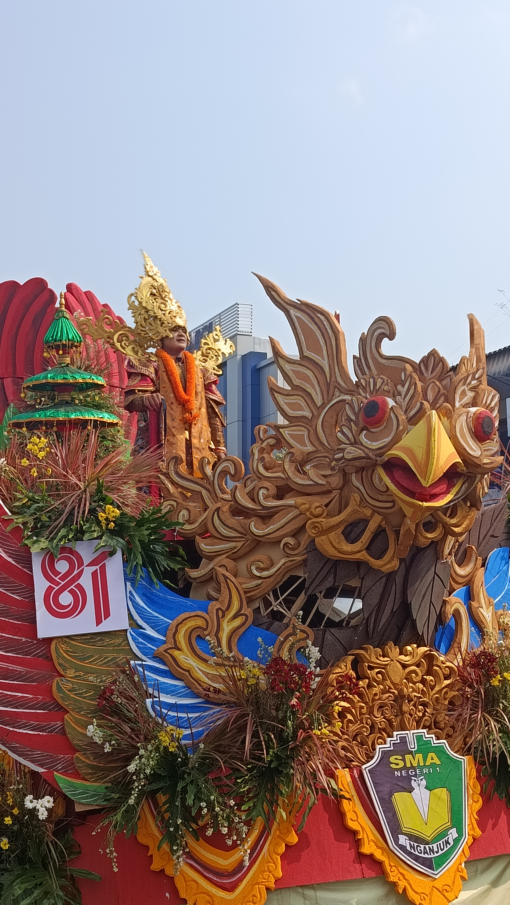

Seni & Budaya
Penampilan Menyala SMASA Nganjuk Pukau Ribuan Penonton Karnaval Budaya HUT RI ke-81 dan Sabet Gelar Juara Terspektakuler
Diterbitkan pada: 15 Agustus 2026 | Oleh: Dyas Kezhya

NGANJUK — Penampilan memukau dari kontingen SMA Negeri 1 Nganjuk menyulut kemeriahan Pawai Budaya dan Pembangunan di Kabupaten Nganjuk pada Sabtu (15/8/2026) dan rangkaian semarak HUT RI ke-81 yang diadakan oleh pemerintah Kabupaten Nganjuk.
Pawai budaya yang dihadiri langsung oleh Bupati Nganjuk Marhaen Djumadi bersama jajarannya di Stadion Anjuk Ladang menjadi sesi unjuk gigi bagi para pelajar SMA/SMK dan kelompok usaha umum. Ratusan warga rela memadati sepanjang tepi Jalan Ahmad Yani hingga Alun-Alun kota demi menyaksikan pertunjukkan budaya yang memanjakan mata.
Diantara jajaran peserta yang tampil tepatnya pada nomor urut 2, rombongan SMASA tampil mencolok dengan balutan pakaian adat dan alunan lagu daerah bali. Mengusung tema Bali Kuno, SMASA menyajikan sejumlah penampilan yang spektakuler. Barisan diawali oleh cucuk lampah, diikuti dengan barisan adat Nusantara, yang kemudian disambung oleh kreasi menakjubkan dari tangan siswa-siswi SMA Negeri 1 Nganjuk Dengan Ogoh-ogoh sebagai salah satu bintang utamanya.
Koreografi yang ditata sedemikian rupa dan visual luar biasa yang ditampilkan setiap talenta mengundang sorakan energik di setiap langkahnya. Alur cerita Calonarang yang disajikan tak kalah membawa daya tarik yang menjadi pembeda antara tema yang diusung SMASA dan kontingen lainnya.
Keindahan visual dan peforma yang konsisten disajikan di sepanjang rute pawai membuahkan hasil yang tak kalah menakjubkan. Dewan juri menganugerahkan gelar Juara Terspektakuler kepada SMA Negeri 1 Nganjuk atas pertunjukkan yang disajikan. Kemenangan tersebut sekaligus melengkapi kemeriahan pesta kemerdekaan masyarakat Kabupaten Nganjuk yang penuh sukacita dan kebanggaan.